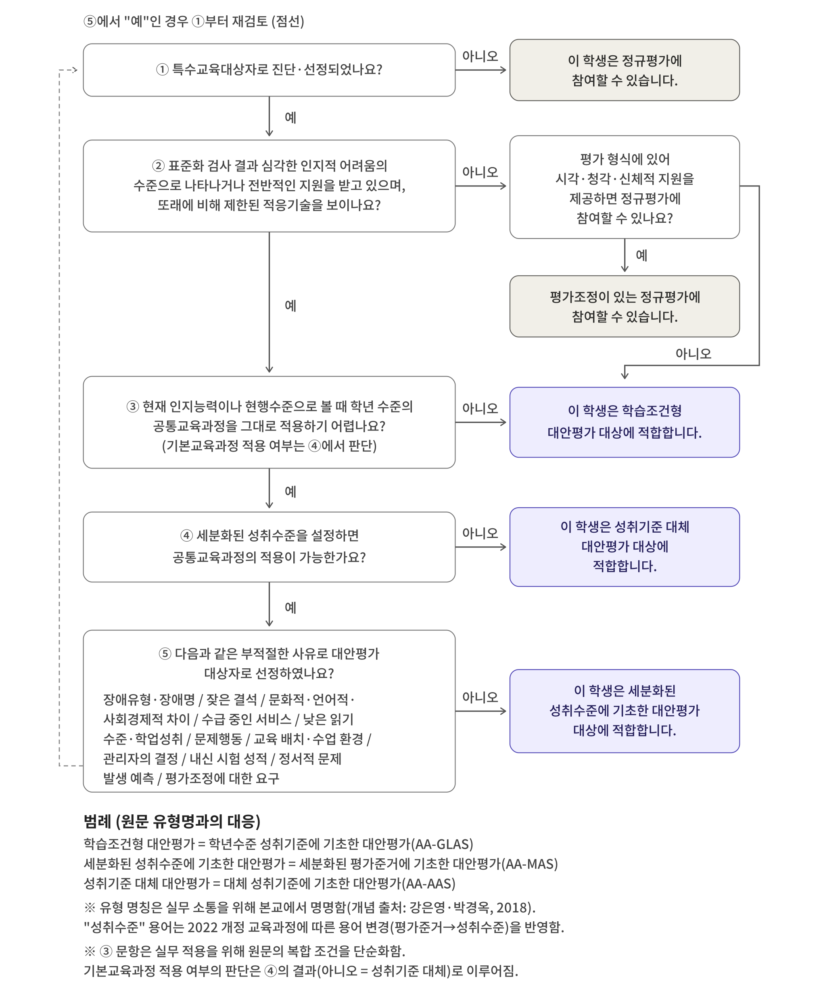

01정당한 평가의 다섯 유형
학생의 특성과 현행수준을 고려하여 실제 성취를 적절하게 드러낼 수 있도록 운영하는 평가를 정당한 평가라고 합니다. 정당한 평가에는 다섯 유형이 있으며, 이 가운데 정규평가와 평가조정이 있는 정규평가를 제외한 세 유형을 대안평가라고 합니다.
| 구분 | 평가 유형 | 정의 | 평가 기준 | 결과 기록 |
|---|---|---|---|---|
| 정규평가 | 정규평가 | 학년 평가계획의 평가 과제와 평가 기준을 그대로 적용하는 평가 | 학년 평가기준 | 잘함·보통·노력요함 |
| 평가조정이 있는 정규평가 | 평가의 내용과 기준을 바꾸지 않고 평가의 형식(시간, 장소, 문제지의 형태, 응답 방법, 보조기기·보조인력 등)에 편의를 제공하여 실시하는 정규평가 | 학년 평가기준 | 잘함·보통·노력요함 | |
| 대안평가 | 학습조건형 대안평가 | 학년 수준의 성취기준과 평가 기준을 유지하되, 학생의 학습 조건(제시 방법, 반응 방법, 과제 구성 등)에 맞게 평가 과제와 방법을 달리하여 실시하는 평가 | 학년 평가기준 | 잘함·보통·노력요함 |
| 세분화된 성취수준에 기초한 대안평가 | 학년 수준의 성취기준을 유지하되, 학생의 현행수준에 따라 세분화한 성취수준을 평가 기준으로 하여 실시하는 평가 | 세분화된 성취수준 | 도달 여부를 판정하여 수행 수준을 문장으로 기록 | |
| 성취기준 대체 대안평가 | 학년 수준의 성취기준을 하위 학년군의 공통교육과정 성취기준 또는 기본교육과정 등의 성취기준으로 대체하여 실시하는 평가 | 대체한 성취기준 | 도달 여부를 판정하여 수행 수준을 문장으로 기록 |
※ 같은 과제에 형식의 편의만 제공하면 평가조정, 평가 과제와 방법 자체를 달리하면 학습조건형 대안평가입니다.
※ 해당 학년군의 성취기준을 유지하면 세분화된 성취수준에 기초한 대안평가, 다른 성취기준으로 바꾸면 성취기준 대체 대안평가입니다.
※ 유형 명칭은 강은영·박경옥(2018)의 대안평가 유형 구분(AA-GLAS, AA-MAS, AA-AAS)을 바탕으로 성취기준의 적용 방식이 드러나도록 본교가 정한 명칭입니다.
02적격성 판단 흐름도
학생에게 어떤 평가 유형이 맞는지는 개별화교육지원팀이 아래 다섯 물음에 차례로 답하며 정합니다. 물음마다 근거 자료를 적격성·유형 결정서에 기록합니다.


- 특수교육대상자로 진단·선정되었나요?아니오 → 정규평가
- 표준화 검사 결과 심각한 인지적 어려움의 수준으로 나타나거나 전반적인 지원을 받고 있으며, 또래에 비해 제한된 적응기술을 보이나요?아니오 → 평가조정이 있는 정규평가 (조정으로도 참여가 어려우면 학습조건형 대안평가)
- 학년 수준의 공통교육과정을 그대로 적용하기 어렵나요?아니오 → 학습조건형 대안평가
- 세분화된 성취수준을 설정하면 공통교육과정의 적용이 가능한가요?아니오 → 성취기준 대체 대안평가
- 장애유형, 교육 배치, 학업성적, 보호자의 요구 같은 부적절한 사유로 대안평가 대상자로 선정하였나요?아니오 → 세분화된 성취수준에 기초한 대안평가 · 예 → ①부터 다시 검토
판단할 때 지킬 원칙
- 유형은 학생 단위로 정하되, 교과의 출발점 진단 결과가 다른 유형을 요구하면 개별화교육지원팀 협의로 교과마다 달리 정할 수 있습니다.
- 장애 유형, 교육 배치(특수학급 수업 교과), 학업성적, 학생·보호자의 요구는 그것만으로 근거가 될 수 없습니다. 근거는 그 교과에서 학생이 무엇을 어떻게 수행하는가입니다.
- 결정은 매 학기 개별화교육계획을 세울 때 같은 절차로 다시 합니다.
03실행 절차 8단계
강은영·박경옥(2018)의 대안평가 실행 과정 7단계를 바탕으로, 유형을 교과마다 정할 수 있도록 학생 정보 수집과 교과별 현행수준 진단을 결정보다 앞에 두고 학업성적관리위원회 심의와 기록·환류 단계를 더했습니다. 이 절차는 매 학기 개별화교육계획을 세울 때마다 새로 밟습니다.
04서식 전체
위 절차에서 쓰는 서식을 한곳에 모았습니다. 0종을 내려받을 수 있습니다.